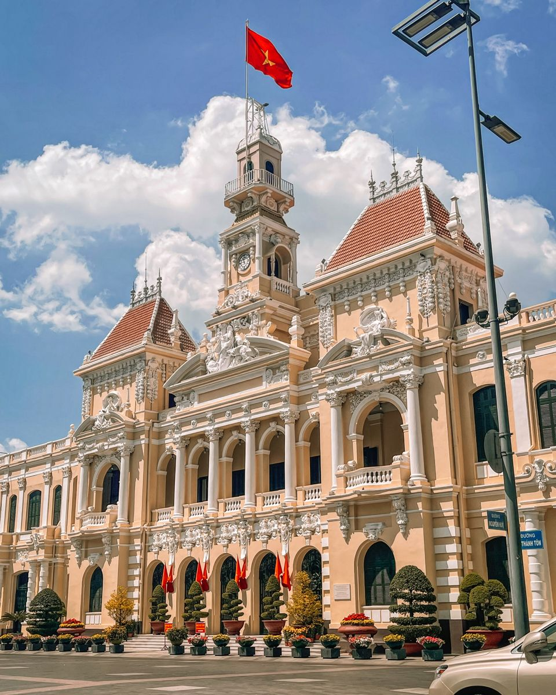

On the river
Travel privately
Smaller boats and flexible timing create a more personal experience of the waterways.
Mekong Delta
River life, orchards and quiet waterways — a softer southern contrast to Ho Chi Minh City.
Begin your journey →Into the delta
The Mekong Delta is most rewarding when the programme stays small and personal — private boats, local lunches, rural stays and enough time to observe everyday life along the river.
The Pacific World approach
We avoid a rushed day-tour feel, use private transport and boats where appropriate, and connect the delta naturally with Ho Chi Minh City.
Smaller boats and flexible timing create a more personal experience of the waterways.

Private road transfers make the delta a practical southern extension.

Pair river landscapes with a resort stay for a complete change of pace.
“The Mekong feels most memorable when the journey becomes smaller, slower and more local.”
Curated journeys
Each programme is adjusted around your dates, travellers, preferred stay style and wider Vietnam itinerary.
Private transfer, local stay and a relaxed introduction to the delta.
Explore journey ↗A flexible day shaped around a wider Ho Chi Minh City itinerary.
Explore journey ↗Connect Ho Chi Minh City and the Mekong in one seamless programme.
Explore journey ↗You may also like
Pair the delta with city time, an island stay or a quieter southern extension.
Why visit Mekong Delta
The Mekong Delta offers a strong contrast to Ho Chi Minh City, replacing traffic and towers with waterways, gardens and rural communities.
It works especially well as a private extension for travellers who want a more local experience without travelling far from the city.
An overnight stay usually creates a better rhythm than a rushed return trip, particularly when the programme includes river time and local dining.
Good to know
Yes, but an overnight stay gives the journey more time and makes it easier to avoid a rushed experience.
The region is known for its extensive river system, orchards, agriculture, local markets and communities shaped by life on the water.
For a tailored journey, private or small-scale boat experiences generally allow more flexibility and a calmer pace.
Yes. The delta and Phu Quoc create a natural southern sequence from river landscapes to island resort time.
Tailored for you
We will shape the transport, boat experience, stay and onward route around your preferred pace.
Start planning →